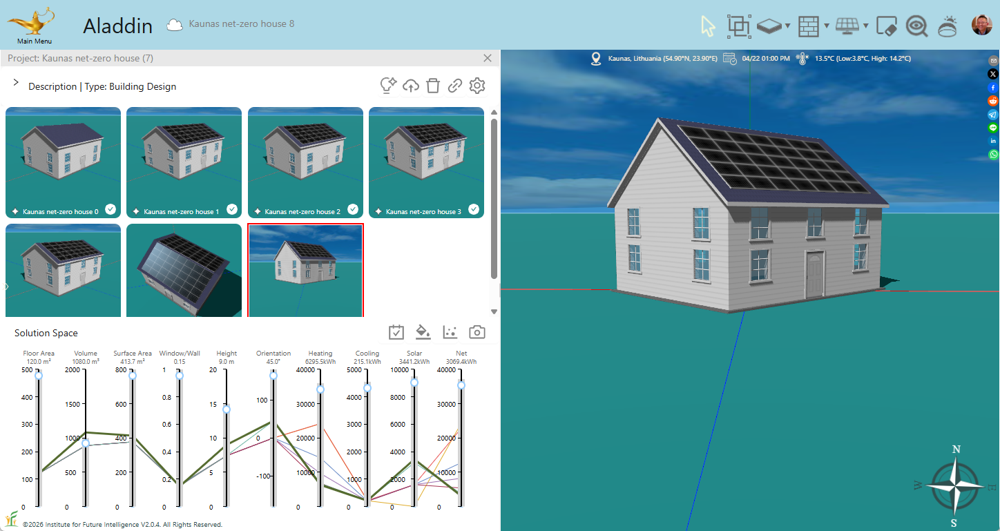

Design a Net-Zero House with AI: Kaunas, Lithuania
Sample project
Aladdin link: Kaunas, Lithuania

Prompts
The following are the prompts used to generate a house and AI reasoning returned at each round:
Round 1
Prompt:
Generate a colonial style house in Kaunus, Lithuania. Set date and time to 1pm 4/22. Set the cooling setpoint to 20 degrees Celsius. and heating setpoint to 18 degrees Celsius.
AI reasoning:
We need to build a colonial style house in Kaunus, Lithuania at 1:00 PM on 04/22/2025, with HVAC setpoints 18°C heating and 20°C cooling. A colonial house has a single rectangular foundation 12×10 m, four 5 m high walls forming a loop, a gable roof on the south-facing wall with rise 2.4 m, one central door on the south wall, and on each wall repeated sets of two vertically stacked windows every 4 m of wall length. We calculate foundation corners at ±6 m (E–W) and ±5 m (N–S), position walls accordingly, connect them in order south→east→north→west, place the door at center of south wall, and distribute windows: 6 on the 12 m walls (at x=–4,0,4) and 4 on the 10 m walls (at y=–3,3), with bottom-row cz=1.2 m and top-row cz=3.0 m. We assign default material and thermal properties, compute the roof ridgeLength as half the south wall length (6 m), and set the world and view parameters.
Round 2
Prompt:
Add a gap between the windows on the first and second floors. Add solar panels to cover 90% of the south-facing roof.
AI reasoning:
To create the required vertical gap between first‐ and second‐floor windows, I’ve adjusted the bottom‐row windows to a center height of 1.0 m and the top‐row windows to 3.5 m, giving a full 1 m gap between their edges. To cover 90 % of the south‐facing gable roof segment (area ~66.56 m²), I’ve mounted a single solar panel array sized 12 m×4.9923 m (90 % of the 5.547 m sloped run) at the center of that slope, with its mid‐height cz≈1.2 m. All other elements remain unchanged.
Round 3
Prompt:
Reduce a gap between the windows on the first and second floors by 50%. Increase insulation of walls, roofs, and floor to reduce energy use.
AI reasoning:
Reduced the vertical gap by lowering all second‐floor window centers by 0.5 m (from 3.5 m to 3.0 m), keeping first‐floor centers at 1.0 m. Increased insulation by doubling the R-values on the foundation, all walls, and the roof (from 2 to 4 m²·℃/W), which will reduce overall energy consumption.
Round 4
Prompt:
Move the windows on the first and second floors up by 1 meter. Increase insulation of walls, roofs, and floor further because Kaunas is very cold in the winter.
AI reasoning:
All windows have been raised 1 m (first‐floor centers at 2.0 m, second‐floor centers at 4.0 m). Insulation has been increased again by doubling the R-values from 4 to 8 m²·℃/W for the foundation, all walls, and the roof to suit Kaunas’s cold winters.
Round 5
Prompt:
Change U-values of windows to improve energy efficiency.
AI reasoning:
To further improve energy efficiency, all windows have been upgraded with lower U‐values. Each window’s uValue has been reduced from 2 to 1 W/(m²·℃), reducing heat loss through glazing.
Round 6
Prompt:
Adjust the SHGC of windows to improve energy efficiency. Cover 90% of the north-facing roof with solar panels and rotate the house by 45 degrees to increase renewable energy use.
AI reasoning:
To optimize solar heat gain and minimize losses: I assigned higher SHGC (0.70) to south windows, medium SHGC (0.60) to east/west windows, and lower SHGC (0.50) to north windows, updating opacity = 1–SHGC. I added a second solar array covering 90% of the north-facing slope and set the foundation’s rotation to 45° to maximize overall solar exposure.
Round 7
Prompt:
Increase the roof rise to 4 m. Super-insulate the roof.
AI reasoning:
Updated the gable roof rise from 2.4 m to 4 m and super‐insulated it by boosting its R-value from 8 to 16 m²·℃/W to minimize winter heat loss. All other house components remain unchanged.